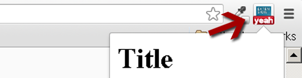

Developing Google Chrome Extensions
Overcoming the limitations of web applications
Examples
- Hangout
- Rapportive
- Evernote
- MeasureIt
- Collabspot
- Little-differ
Overview
- Chrome extensions extends chrome capabilities
- Cross platform (mac, windows, linux)
- Extensions are zip files (.crx) of HTML, Javascript, CSS and assets
- Access to all standard JS api's, plus the APIs in the "chrome" namespace
- Packaged apps and themes are actually implemented as extensions
What Extensions can actually do?
Add UI in the browser
- Browser action
- 
- Page action
What Extensions can actually do?
- Add UI in the browser
- Present UI
- Change the display of the page
- Override a "default" Page
Architecture

Architecture
- manifest.json file
- Background page
- Invisible page that holds your extensions's main logic
- Options pages
- Override pages
- Popup
- Content Scripts
- APIs
Manifest File
{
"name": "GDG Bacolod 2013",
"description": "Getting started with chrome extensions",
"manifest_version" : 2,
"version": "1",
"permissions": [],
"minimum_chrome_version": "28",
"content_scripts": [{
"matches": ["http://www.inquirer.net/*"],
"run_at": "document_end",
"js": ["js/script.js"]
}],
"background": {
"scripts": ["js/background.js"]
}
}
Content Scripts
- Used to interact with the content loaded in the browser
- Your own javascript gets injected into pages
- Javascaripts executes in the context(process) of that page
The CHROME.* APIs
- chrome.tabs
- chrome.windows
- chrome.webNavigation
- chrome.runtime
- chrome.storage
- chrome.alarms
- http://goo.gl/56uehy
Security
- Permissions
- bookmarks
- clipboards
- contextMenus
- geolocations
- Host-matching patterns (for interacting with pages loaded into the browser)
Creating and running a minimum app
Little Differ in 5 steps
- 1. Setup
- 2. Display sidebar on a file view page
- 3. Load the commit history of the current file
- 4. Display loaded history in the sidebar
- 5. Show diff view in a tooltip when a commit item is hovered
Step 1: Setup
- folder structure
- resources
- third party libraries
- configuring to load only in github.com/*
- using github api